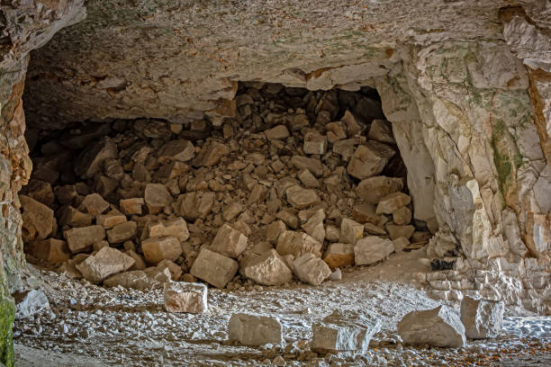

Você está em uma vila pequena e pacífica. De repente, ouve um grito vindo da floresta próxima.
Você se depara com uma bifurcação na trilha. De um lado, há um caminho iluminado por luzes mágicas. Do outro, um caminho escuro e assustador.
Um mensageiro chega com notícias de que um grande perigo está se aproximando da vila.
Você encontra uma pequena cabana com uma mulher idosa dentro, que lhe oferece uma poção mágica.
O caminho é sinistro e cheio de perigos. Você encontra uma caverna com um oráculo sombrio.
A vila se defende com sucesso do ataque. A comunidade fica mais unida.
Você encontra ajuda e retorna à vila a tempo de evitar o perigo.
A poção dá a você a habilidade de entender os animais. Um cervo lhe fala sobre um tesouro escondido na floresta.
Você encontra o tesouro e ganha uma poderosa espada mágica

O cervo leva você para um caminho é sinistro e cheio de perigos. Você encontra uma caverna com um oráculo sombrio.
O oráculo revela uma profecia sobre um grande mal que ameaça a vila e dá a você um amuleto que pode ajudar a enfrentar a ameaça.
Você chega à vila e descobre que o perigo é um ataque iminente de monstros.
Você volta para a vila tarde demais. Os montros acabaram com a vila e os aldeões.
Dentro da caverna, você encontra um grupo de criaturas que atacam você.
A vila está bem preparada para o ataque, e o resultado é um sucesso. A vila pode se tornar um local mais forte e unido.
Você vence a batalha, mas a caverna desmorona, fazendo com que você morra soterrado
As criaturas se tornam aliadas e oferecem informações sobre uma ameaça que está se aproximando da vila. Você então resolve retornar a vila para alertar os aldeões.